I Accidentally Bought a 2008 KLR650
 Danny Wahl
•
•
Danny Wahl
•
•
Long story short I was planning on moving from China to the USA and needed a bike before I landed so I wired some cash to my father-in-law and started sending him links on craigslist to anything that he would call and low-ball (sorry if you're one of the offended call recipients). One day he emailed me back and said he had checked out an '09 KLR that looked pretty good, I said "do it."
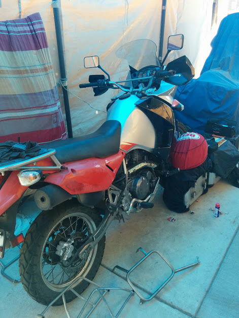
Beautiful factory "pink" fairings after years in the AZ sun.
I landed in the US and when I came to collect the bike I thought "uh-oh". If it had been me, I wouldn't have bought it: 19,990 miles, laid down on both sides, broken clutch lever, odd idle issues, missing about a half dozen bolts at first inspection, etc... But I smiled, told him "thanks" and took it. It wasn't until I took the title to the DOT to put it in my name (and get my driver's permit as the US doesn't recognize Chinese license) that I realized it said '08. D'oh. I knew I wanted anything but an '08 and here it sits.
I also found the previous owner's "full maintenance log" that was included which when translated from Spanish reads: add oil, add oil, add oil, add water, add oil add oil, add oil...
Oh well this just means I get to do some work. Ordered a doohickey kit from Eagle Mike with the deep hole fix and a 200+ bolt stainless steel kit and shipped them to my brother in California where I'm going tomorrow.
By the way here's my China bike, A Jialing JH150GY-3
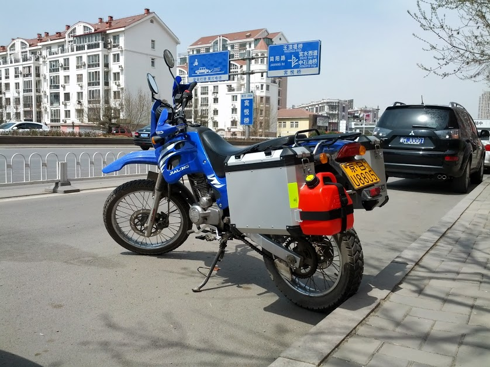
Since all the parts are going to California and I'm in AZ I decided to paint the bike, so I jumped in photoshop and started playing around. I have the red '08 but I'm going to repaint the fairings gloss black with Krylon Fusion and clear coat with spraymax 2k enamel. My brother's girlfriend is a graphic designer and she's going to stencil part of the '14 new graphics on for me. This will give me a black and silver looking bike- similar to the black and gray '14. I'm very tempted to take it all the way down to the frame and paint the frame in Kawi green, but I'm a lazy lazy man.
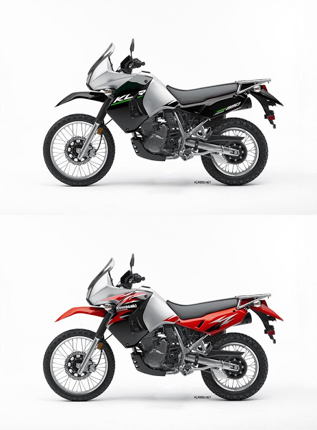
Yeah, I think that's going to look alright. I started pulling the fairings yesterday to prep them for painting, and then I find this:
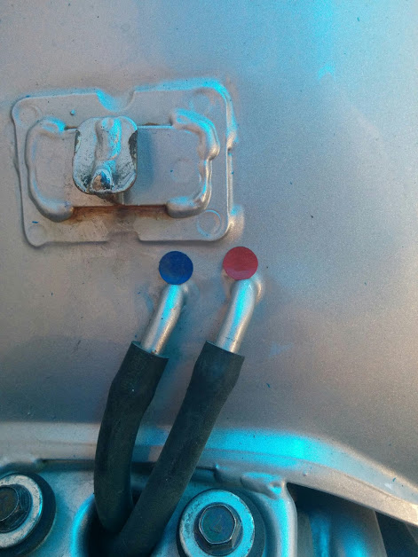
What the?! A California bike? This is the gift that keeps on giving. Add de-california-ing the bike to the list (I don't live in CA, so calm down).
One final "argh" I have a sweet set of panniers from a company called MotoSevn in China (you can see them up above). They hand make them and hand-make the racks for a ton of bikes. A rack and set of panniers costs about $400 USD. I really wanted to keep my panniers so I brought them with me and before I left I ordered a rack for a KLR from them for about $100 USD. Should look like this:
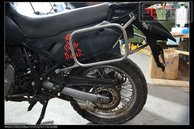
Except for two problems. First, they sent me the wrong rack.
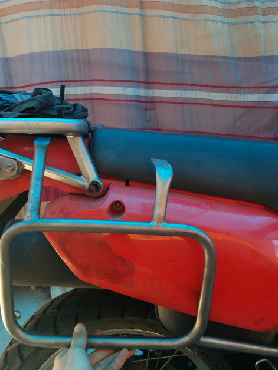

Second, at some point they switched from 15mm steel tubing to 18mm steel tubing, so I can't even use the 'loops' and get a mount fabricated. Anybody know where I can get a rack with the following dimensions: 31cm x 21cm / 15mm? No? Oh, well.
Got the doo kit + deep hole fix from Eagle Mike, nicely packaged.
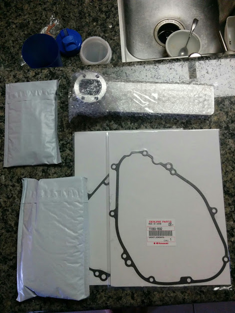
and got the stainless steel bolt replacement kit from Desmo Parts, neatly labeled and packaged with thorough instructions:
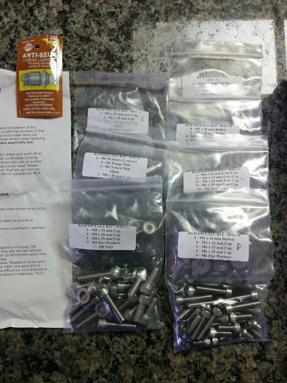
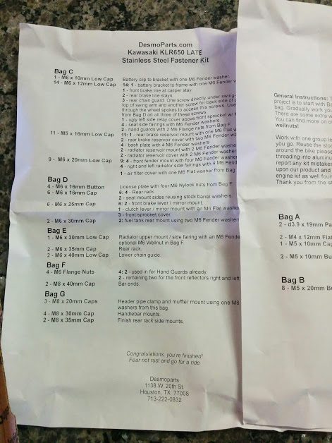
Started on the valve adjustment and ran into a "huh"? According to the Clymer cam lobes should face away from the engine at TDC, but my lobes are facing toward the engine:
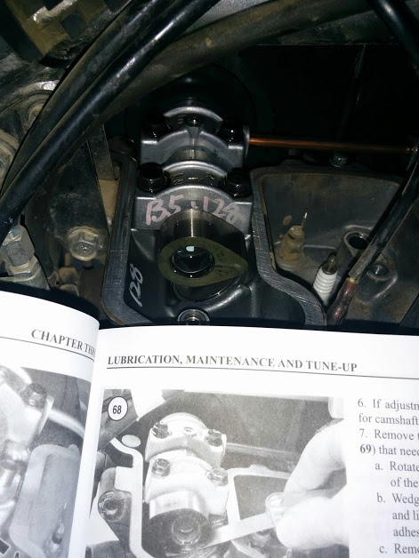
Is this an issue, a misprint, or nothing? Turns out one more crankshaft revolution does the trick (the magic of 4-stroke!). I aligned them 'center' and checked the valves.
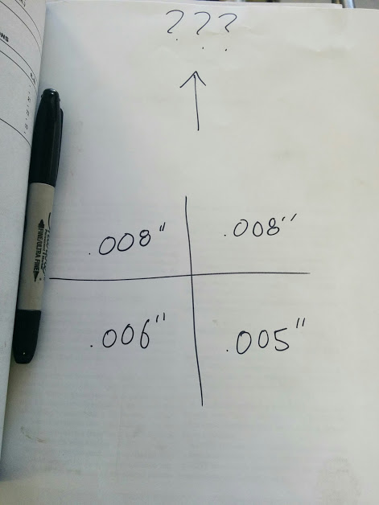
OK, all in spec. that will save me some time and money. I'll pop the spark plug out and visually check where the heck TDC actually is But I suspect that it doesn't actually matter for the purpose of checking the valves. Onto the doohickey...
Alternator looks good!
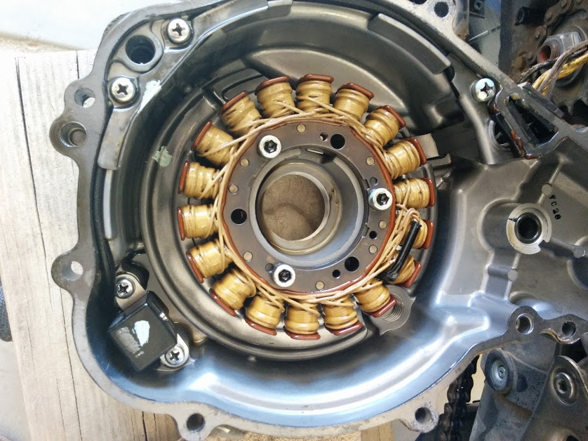
Rotor looks good on the outside
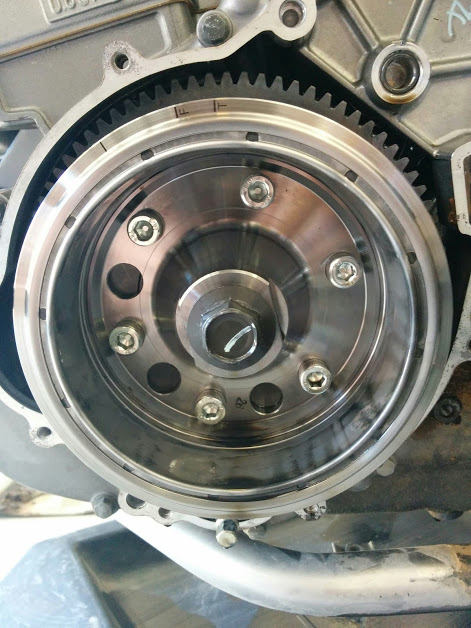
A bit of scoring on the inside, I don't think it's enough to worry about, but it is rough to the touch. Notice the odd scoring pattern on the top-right
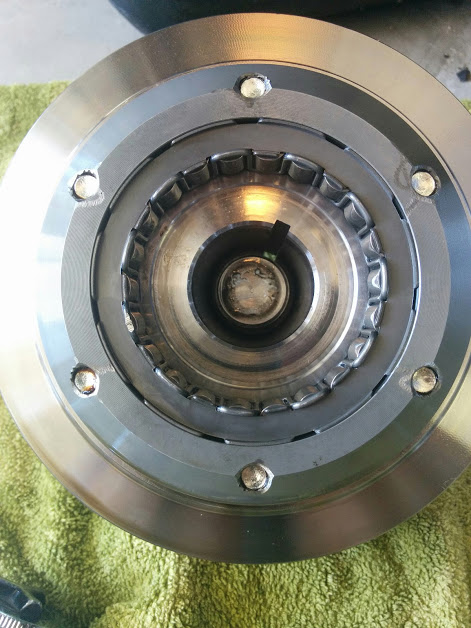
Yet again, pristine.
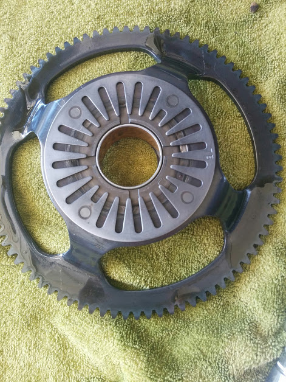
Nice and clean on the inside:
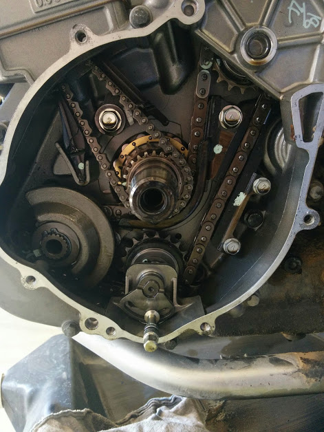
Is it just me or does this NOT look like a stock doo-hickey?
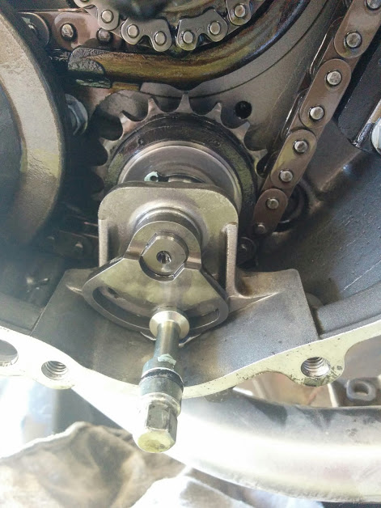
Here it is next to the one from eagle mike:
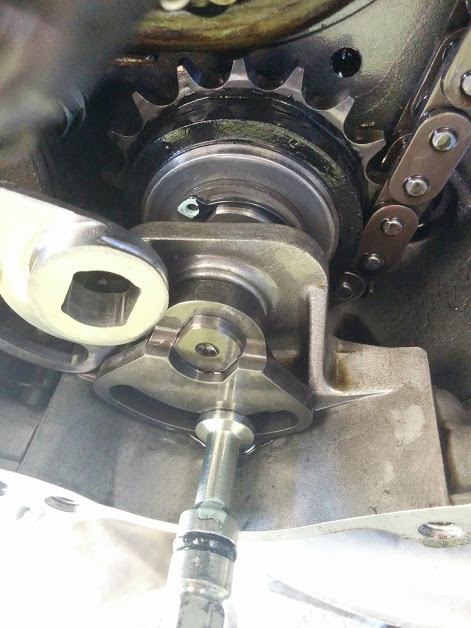
The main difference is between a machined product vs. a cast product.
Took a couple of days off from work to see my brother and his fiance. Once I got the left crank-case cover off I notice that the inside-seal between the alternator cover and the crankcase cover had a lot of gasket maker gunk stuck to it- so I think it will be necessary to pull the right side cover and check/clean the oil screen, which means I'll need to order a couple of new gaskets. I don't mind since I'm waiting on an oil filter and a small torque wrench from amazon.
In the mean time my spraymax 2k arrived so I can get back to sanding/painting the fairings while I wait for stuff to arrive.
I guess a question is do the new KLRs still have a water pump seal issue? I'm going to order the gaskets anyways so should I order any other parts for the right side? Couldn't resist getting a little more work done...
Those gaskets did not come off very clean
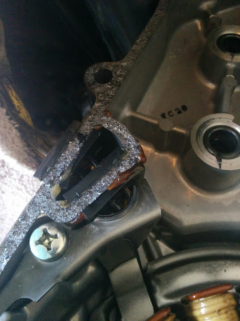
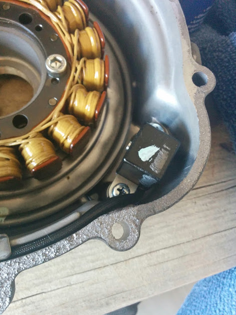
I tried a few things as I was afraid of scoring the aluminum, but I finally ended up using action cleaner/degreaser and some fine steel wool. I figured if it's good enough for cleaning a gun it would probably work for a bike. In order to prevent the steel fuzz from ending up in the alternator case or the balancer guts I held a shop rag inside the case as I worked the steel wool along the rail to prevent anything from falling in.
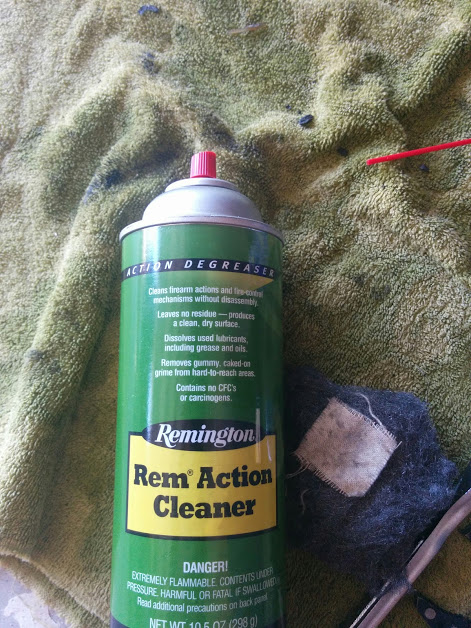
In the end it turned out pretty good. The wool didn't seem to scratch the surface at all.
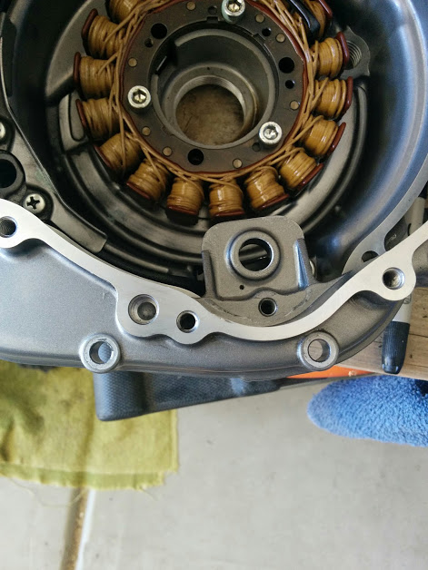
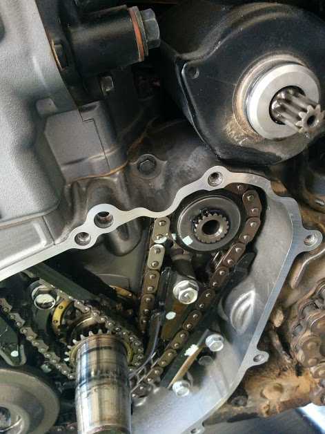
When disassembling the bike the whole balancer sprocket fell off because I had the bike on its side stand, so I looked around the garage and found this:
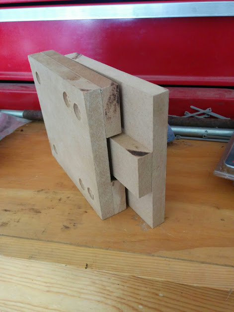
My brother makes Kydex holsters and that's a belt loop template for a spare clip. I propped it under the side stand to get the bike more upright and prevent things from sliding off when trying to reassemble.
When disassembling the bike I kept everything in labelled baggies, here's the balancer and the old doohickey.
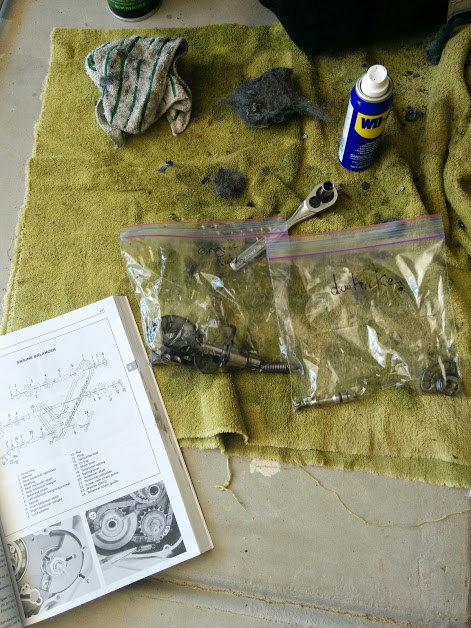
Well that went back together as easily as it came apart.
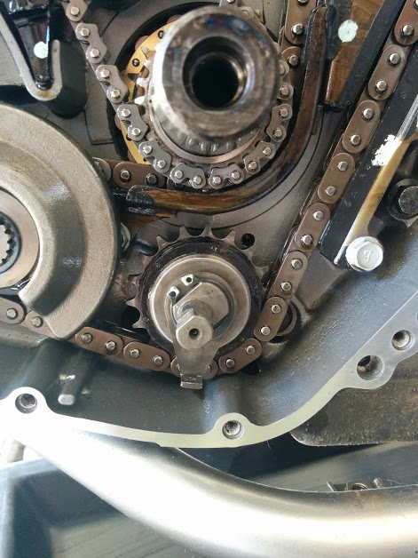
Now it's time to start reassembling the casings. First I applied some dressing to the faces with a Q-Tip using this:
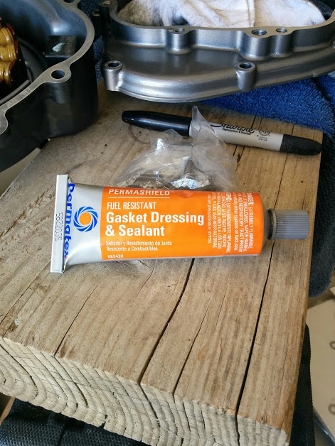
Now I can start reinstalling using the stainless kit.
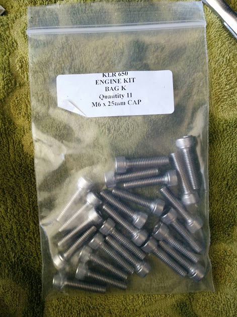
Here's a stock bolt compared to a new stainless:
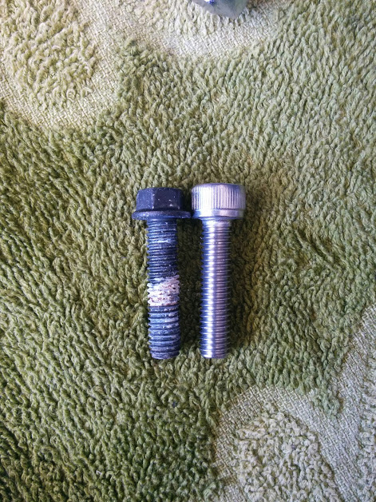

Unfortunately the kit didn't include the one hidden bolt that lives inside the casing (the one that's shorter than the others)
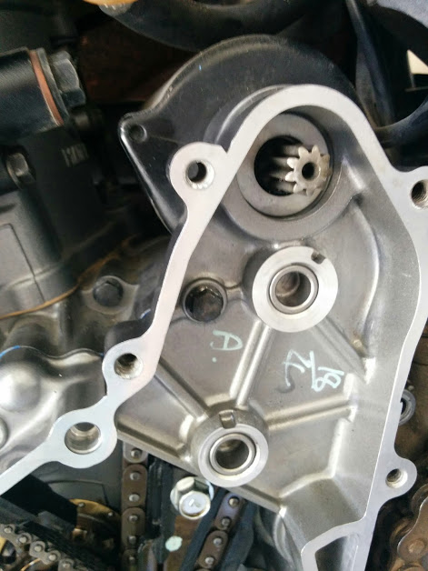
Applied some copper-based anti-seize lubricant to the end of the threads and started installing.

On to the doohickey.

I reinstalled the washer and the bolt and tightened slightly to prevent it from slipping while trying to hook the torsion spring.
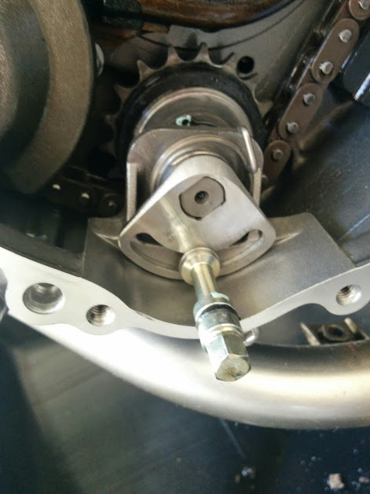
I ended up using two pairs of needle-nosed pliers, the first I grabbed at the base of the 'U' and pulled across, the second I grabbed the end and used to insert into the doohickey hole.
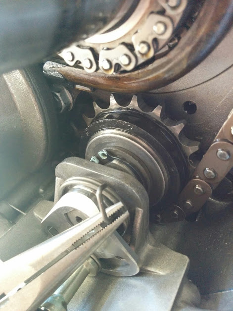

It seems like the spring might want to fall 'forward' off of the face of the doohickey, especially since it's a graded surface, should I be concerned about that?
I'm stopping on reassembly there since I don't have a torque wrench that goes as low as needed, so I will wait for it to arrive
Of course I couldn't have gotten any work done without help from the boy.
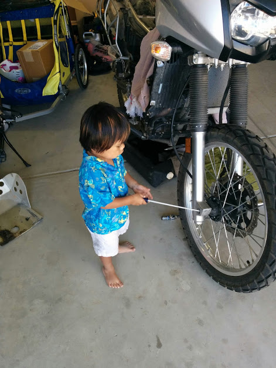
So there she sits for now, occupying the primo space in the garage. As you can see we're not brand loyalists (not pictured the 2 hondas and the yamaha)
Water pump gasket and clutch cover gasket arrived from Partzilla yesterday, just waiting for that torque wrench from Amazon which should be here today.
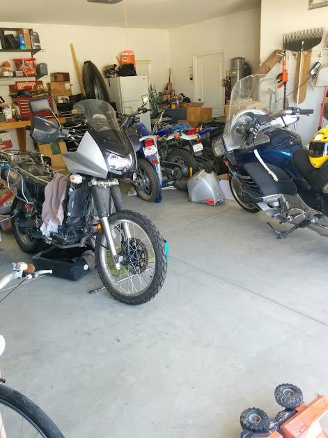
They really outdid themselves on the packaging for this one
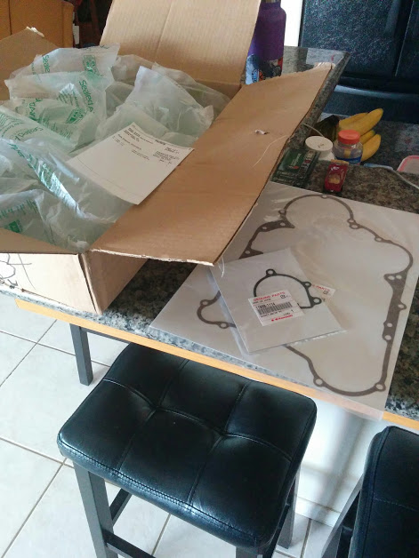
Pulled the rotor and starter clutch gears back out, as well as the new (massive) tube of moly-infused grease
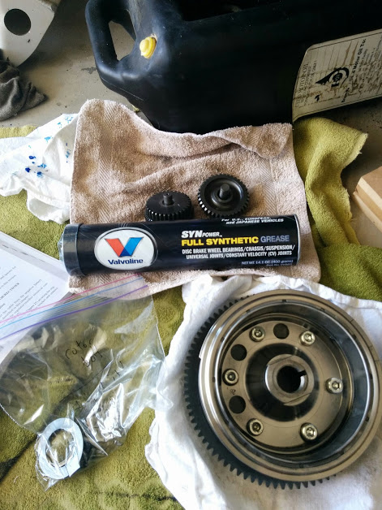
Loaded it up in the grease gun and put a dab on the woodruff key to help keep it in place, as the key slot was currently sitting at about 3 o'clock- as an aside loading the grease gun was a pain as it's about a 2" diameter and the canister was 2 1/2" diameter...
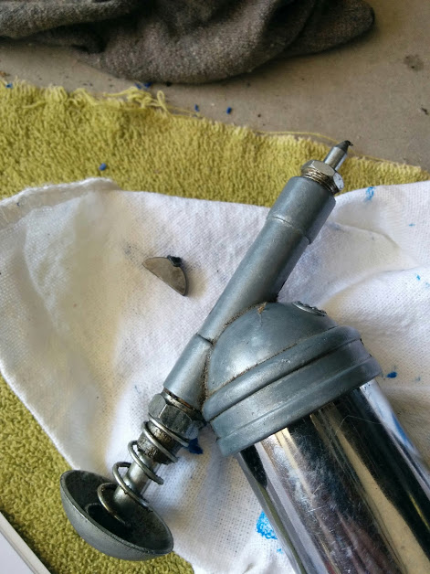
Put a little dab at the end of the spacer for the deep hole fix as well- just to keep it seated during installation.
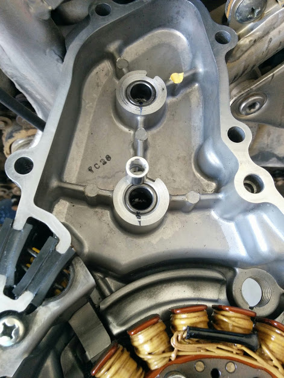
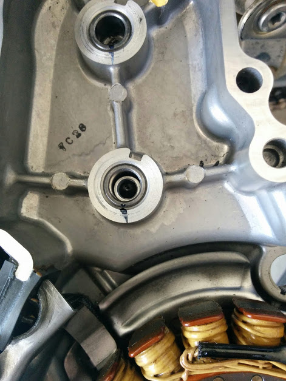
Reading the descriptions of what the issue was and what it now fixes finally make sense, I guess a picture is worth a thousand words
New rotor bolt ready to go.
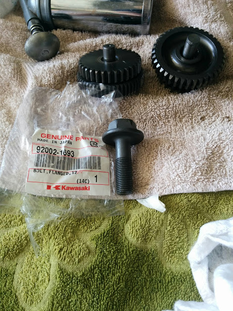
I couldn't find a deep 19mm socket and with the rotor tool installed the torque wrench wouldn't seat properly so I had to find an extension- this left me plenty of room but I was afraid of creating a bit of a moment arm and messing up the torque ratings, but I think it went alright.
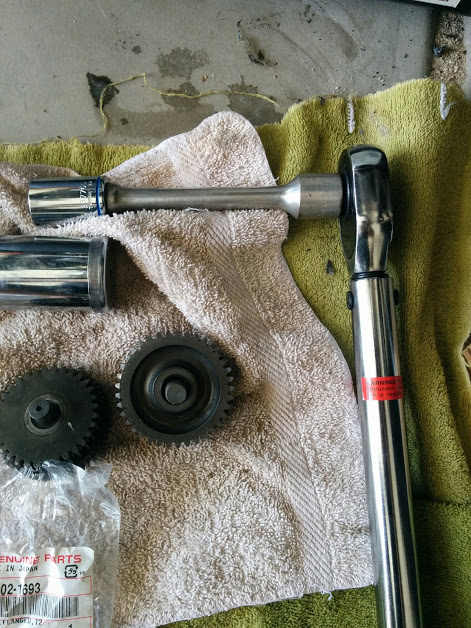
ran out of long zip ties...
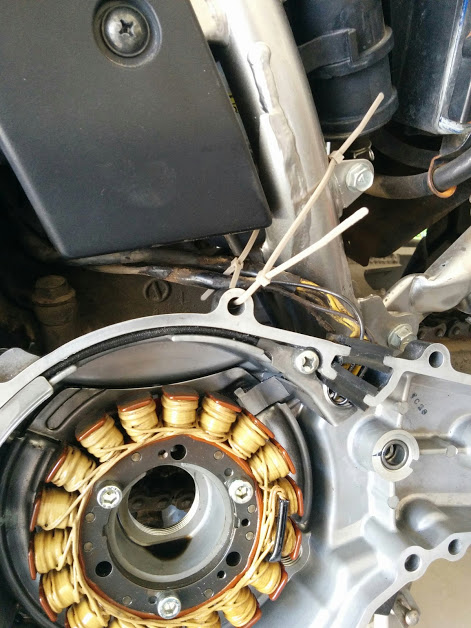
Starter clutch gears reinstalled. There's really only one way to install these so it's hard to get wrong, just make sure that all the teeth are seated between all the gears. It might be possible to have a starter clutch gear not installed all the way and close up the case. Unfortunately the clymer only provides all photos directly from in front so it's kind of hard to see the proper installation, so here's a clarifying photo.
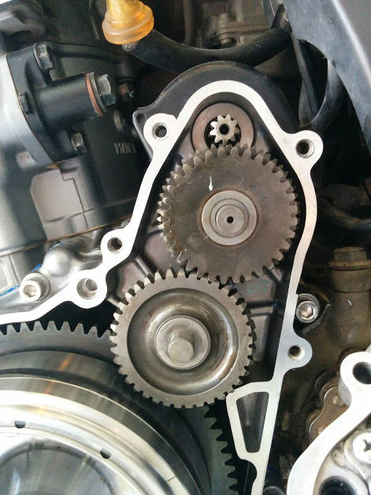
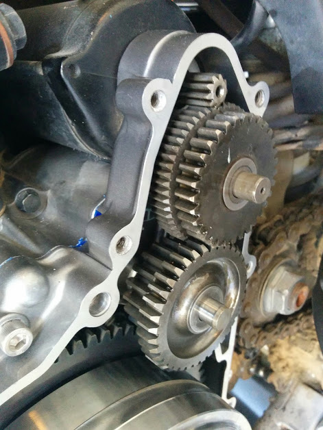
More gasket prep, new gasket, and new stainless bolts with anti-sieze on the threads. Now it's starting to look like a functioning motorcycle, and best part is I don't have any extra screws or washers left over (My grandpa always ended up with extra screws and washers )
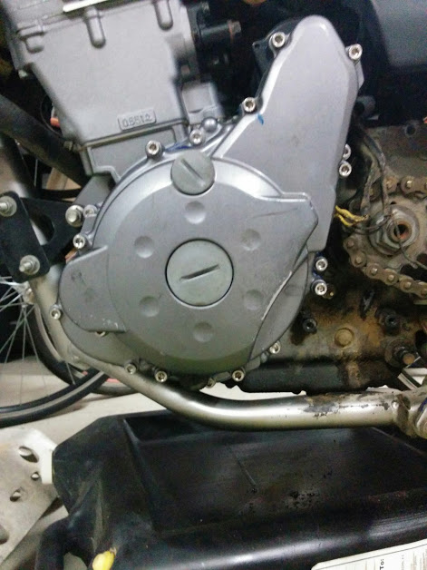
Those stainless bolts look kinda beefy if I do say so myself. Still have a lot of cleaning left to do on this side, then I tear down the right side and move back up to the top end. Maybe some day I'll ride this thing...
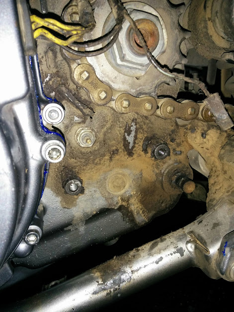
The front sprocket and sprocket guard area were much dirtier than I thought. There was a track for the chain through the gunk. Liberal amounts of wd40, a flathead screw driver and a few shop rags took care of it.
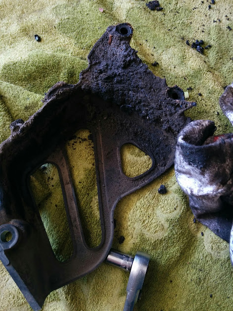
It wasn't officially in the stainless kits but they provided a ton of extra bolts so I swapped out the shifter bolt while I was at it (this is a spare oil filter cover bolt). Cleaned the crap off the shifter lever while I was at it
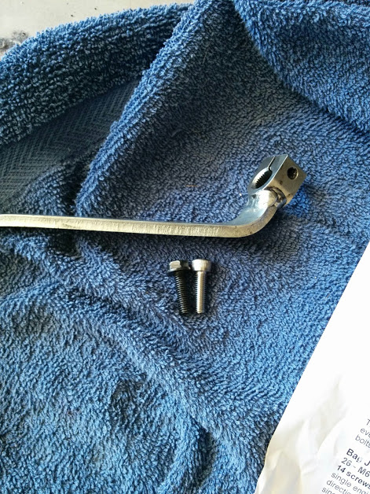
Swapped out the oil filter - the previous one was manufactured 5 years ago, so it's probably due. It didn't seat very well either on the outside or around the shaft, but this could also just be due to age, heat, and pressure.
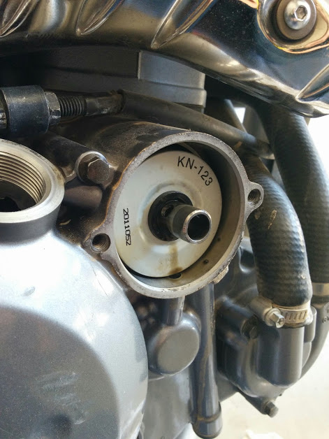
Drained the coolant and promptly spilled it all over the garage floor so I decided to call it a day.
Started in on the right side of the bike- boy that's a lot of corrosion on those bolts.
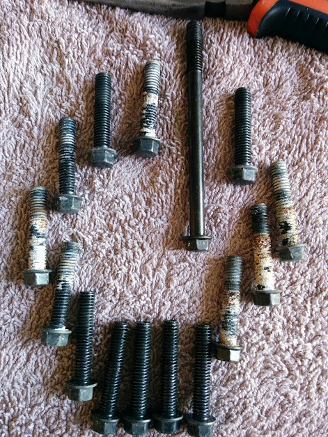
And some rust. Good thing they'll be replaced with stainless.
Got the oil screen out and there was some gasket maker which I expected but there was also some black plastic and a couple of shards of aluminum inside the crankcase where the oil screen sits.
Also found a pea-size glob of oil that had forced its way out of the case near the brake pedal mount- guess It's a good thing I'm replacing the gasket anyways...
Put it all back together giving it the stainless treatment and added some 20W-50 oil and 50/50 coolant, now back up to the topend and it'll actually be ready to ride.
Everything looked good so it was time to put the top end back together too. Pulled the old silicon (and gasket maker) off
Added new silicon sealant
threw in a new spark plug and put the bike together enough to start it. Fired up the first time and turned it off after 30 seconds, checked the coolant and it looked good.
Turned it back on and let it idle, while adjusting the idle to ~1200 RPM. While adjusting the idle I noticed a small puff of black/gray smoke from the rear-end of the right-side of the engine block. I cursed and turned the bike off, wiped down the whole thing and turned it back on. No more smoke, hopefully it was just a little bit of residue.
I did have a single drop of coolant fall from here (the open hole between the coolant drain plug and the engine housing bolt):

I'm going to assume that's OK since it was just a single drop. So here she runs:
Now I just need to finish painting... and put on the stainless bolt frame kit.. and do the other maintenance... and... and... ahh I'll just go ride.
I forgot to say, this bike was manufactured in April 2007 in Thailand. Seems to be one of the first, the last 5 of the VIN is 02### - so it seems pretty early.
Finished wet sanding everything with a 400 grit sand paper today. I was able to use the power sander only on the black fairings, everything else was done by hand. The power sander did a good job pulling the gloss finish off, but I still had to get some of it by hand.
My wife said it looks like the batmobile now. Kinda hard to tell here but this is a small dog kennel with rope run across and clothes hangars- nice and professional.
For this type of stuff I'm going to skip the clear enamel, we'll save that for the fenders, and fairings. Here's the "before" for the rear rack. It was this faded before I sanded it.

And here's the after.
The paint looks unevenly colored but that's just a combination of light and texture- it came out really well. This is just krylon fusion gloss black. I did a grip coat, a "primer" coat, and then three thick coats waiting 15 minutes between each coat.
I also wasn't going to paint the radiator cover or overflow cover, but since I had them off I figured "why not?" It allowed me to do a good test on some semi-hidden parts.

You might see some white flecks on some of the pieces- that's salt from the Bug-A-Salt rifle- but it's just sitting on dry paint, it's not in the paint.
Tomorrow I'll hit the rest of the non-essential parts including the sprocket cover, master cylinder guard, rear fender/license plate holder, and city light cover. Then I'll move on to the big stuff that will get probably one or two more coats and two or three coats of enamel.
Since it's getting above 90 in the afternoons I can only paint in the morning, so afternoons will be spend de-california-ing the bike as well as swapping out the frame bolts for stainless.
Marked off the "important" stuff and kept painting. Grip, primer x2, and 4 top coats.

Got a little lazy when it came to the tank- just sanded a surface on it taped it off and painted it. I also dropped the tribal/flame pattern for a solid space.
I was waiting for my brother's girlfriend to be able to do some graphics but she's busy and I found a 2015 new graphics kit on ebay for $50 so I ordered that. Once it arrives I'll apply it to the bare paint and then apply top coat. That will prevent the graphics from peeling.
Now it's the waiting game again...
Forgot to do this before I painted so I grabbed the dremel and cut the broken part of the tail off below the license plate mount. Put a round corner on it and painted it.
While I'm waiting for the decal set to arrive I decided to swap out the stock bolts for the stainless set. This means I'll be doing some of them twice when I reinstall the parts I painted, but whatever- it's one more thing I can do now.
before and after (not torqued)
It's probably a good thing I ordered this kit anyways since I'd want to replace some of these eventually.
Scotch-taping a well-nut, that's a new one for me... Of course another one was glued in
I have to say that one thing that surprised me with this bolt kit was how generous they were. If it called for 11 bolts they provided 16. Where you needed nylon washers they provided both black and opaque.
I thought the bolts for the bar ends were torqued down incredibly tight, that was until I finally broke them and got them out...
This bolt kit had something like 140+ stainless bolts and they probably gave me 200+ bolts. The problem is that the bike could easily swap probably 160 bolts, so now that I'm done with the instructions for the kit I'm chasing down extra screws on the bike and seeing if I have a stainless that can replace it, like these:
By the way, are the soft luggage racks not a stock option on the bike? The stainless screws that were in the kit were far too short for me to put these back on. It's not important to me since I'm getting a proper luggage rack at some point, just curious.
This bolt (dead center), by the ways, is the most infuriating bolt I've found on the bike. it's dead simple to get it out on the right-hand side but it took forever to get this one out, and I still haven't been able to get it started again, there's just not enough room for a socket wrench

To get that bolt re-set I ended up taking off the whole upper fairing, which allowed me to replace quite a few bolts with stainless. All of the following are bolts that are NOT includes in the desmos instructions, but that I was able to replace with spare parts included with the kit.
Upper fairing (inside)
Upper fairing (outer)
Pillion foot peg mounts
Air box filter mount and electric cable guide mount
Rear fender connectors
Radiator fan mounts
Brake pedal
Kick stand electrical cover
Exhaust heat shield

The exhaust heat shield bolts are the only ones I had to modify- I cut them down to about half length using the dremel. I also had to get some of my own crush washers, other than that all of the above came from the bolt kit.
Pulled all of the CA exhaust crap- that's an out of control amount of stuff.
I rerouted the tank vent tube under seat
I also pulled the battery vent tube drain since this battery doesn't seem to have a drain.
This allowed me to re-route the air box drain tube through the fairing where the battery drain tube used to be.
And what on earth is this tube? I chased it up under the gas tank- but I didn't want to pull the tank to find out what it is. This seems ridiculously long. A cursory glance through the manual didn't show what it is.
I have a few more minor bolts that I'll try to replace tomorrow, like cable guide mounts etc..., and I think I'll be done with the stainless kit.
Turns out that stupid long hose is the radiator tank overflow line, knowing that I was able to re-route it directly into the overflow tank mount, removing about 3' of hose. Now it will just dump directly out the front of the bike.
Finished up the stainless bolt swap by grinding down a few remaining bolts and replacing the radiator overflow tank housing frame mounts and some cable guide mounts.
While I was swapping bolts I removed this- it looks like it was supposed to be holding/guiding something but it was not- it was just sitting there (see the empty hole in the middle of the photo above, so for now I've removed it. Unless it's necessary I'll just keep it off for now.
I also threw in a new cotter pin on the rear wheel- notice how beat up that old thing is. Now it's back to waiting for my decals to arrive.
Turns out waiting IS the hardest part. FedEx said my decals made it to town on Saturday morning but wouldn't be delivered until Thursday- but I could request to pick it up at the facility. I requested to hold for pickup and made the 30 minute drive to the airport, only to be told that it was there but not sorted yet- I can come back by maybe Tuesday or Wednesday to pick it up.
Also got a package in the mail from China with my old handguards. Tried them out and they don't fit the KLR they sit too low, bummer- but I guess it gives me one less thing to paint...


So I stuck them on the TT-R instead.
I completely forgot about my tailbox amongst all the other things. I have a nice large BJG brand aluminum box that a friend gave me and I wanted to try to make it quick release like my panniers. It was already drilled but I can't reuse those holes and make it quick release so, note to self- this box isn't water proof!
I bought a 4 eye-bolts and some wingnuts and cap nuts which won't work together... The goal is to eventually swap the wingnuts for a threaded washer with a cap nut.
The idea is to mount the eye bolts and allow them to rotate on and off the mounting plate to quickly release.
Used the Dremel to open up the eye bolts for them to mount to the rear plate.
Then I decided to add a vacuum cap to the end of the bolt for a little more grip.
Now it's mounted, sturdy, and not moving anywhere.

I noticed that mounting the tail box scuffed up my new paint job on the rear rack- and we can't have that yet so I went to harbor freight and bought a roll of tool box drawer liner, simple rubber matting that's about 2mm thick and used silicon RTV to attach it to the bottom of the box. I then decided I might as well line the inside of the box as well.
The corners didn't come out so well inside of the box, oh well...

I figure between rubber on the eye bolts and rubber on the bottom of the box I should get a better mount with less slip
My package was finally available for pickup from Fedex, I left off about 1/2 of the kit- I wanted something minimal. Also cut off all the gray stripe accents from what I did apply, except for the 650 part.
I'll clearcoat on Wednesday and then hit the pavement.
Oh yeah, the stickers came from Venezuela (what copyright?!) from a company called backup kits. They also make some cool wraps and some that have, uh... character.
Got it all put back together after clear coating, here she sits.

Now for the fun project!
I took an old gardening mat, wrapped it in Gorilla tape, glued it to some poplar board that I sprayed black and attached both some industrial Velcro and some fabricated Kydex clips and voila! a backrest for the pillion
Since the bottom is velco, it doesn't have to be removed to open the tail box
This was supposed to be a prototype but it does its job. When it breaks I'll do a version 2. Now I need to start thinking about luggage racks again...
After I moved to Utah I added new tires, a new battery, and new chain. There's still lots more I want to do, just need time and money, but I'm having too much fun riding to!